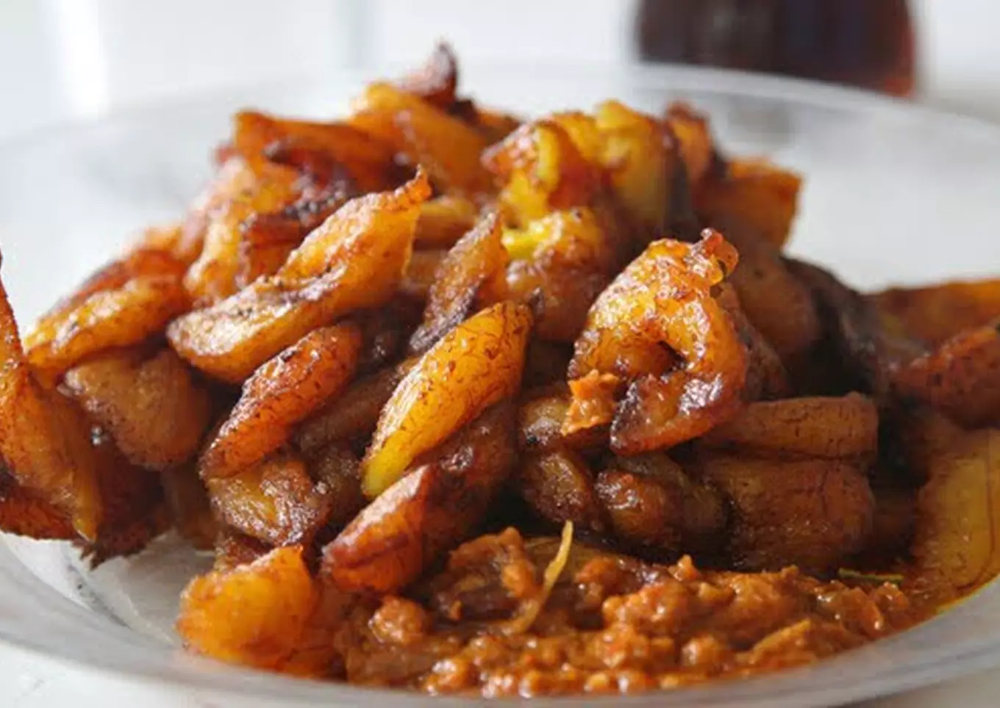

Alloco

Description
Alloco (Aloco or Alloko) itself is very simply (and somewhat blandly)
fried plantains.
Plantains are a staple crop throughout much of Western Africa, but it
would still be hard to imagine that a recipe of simply fried
plantains would be as ubiquitous as it is.
Ingredients
- 03 sticks of plantains (yellow and brown)
- Vegetable oil for frying
- Salt
Steps
- Using a sharp knife, cut off both ends of the plantain. This will make it easy to grab the plantain skin. Slit a shallow line along the long seam of the plantain.
- Cut the plantains into medium-sized diagonal pieces and set aside.
- Heat the oil in a large skillet over medium-high heat. Check to see if the oil is ready by carefully trying a piece of plantain. The oil should bubble before proceeding with the rest. If not, wait another 2 minutes. If the oil is too hot, turn off the gas and wait about 2 minutes before continuing.
- Fry in batches, turning once, until the plantains have reached the desired color (brown) about 2 to 3 minutes per side.
- Then continue cooking, turning the plantains occasionally, until tender and golden brown, 5 to 7 minutes.
- Carefully remove the plantains with a slotted spoon and transfer them to a plate or tray lined with paper towels.
- Season with salt and/or cinnamon sugar, if desired. Serve hot. You can eat it with fried chicken, fried fish with a good chilli etc...